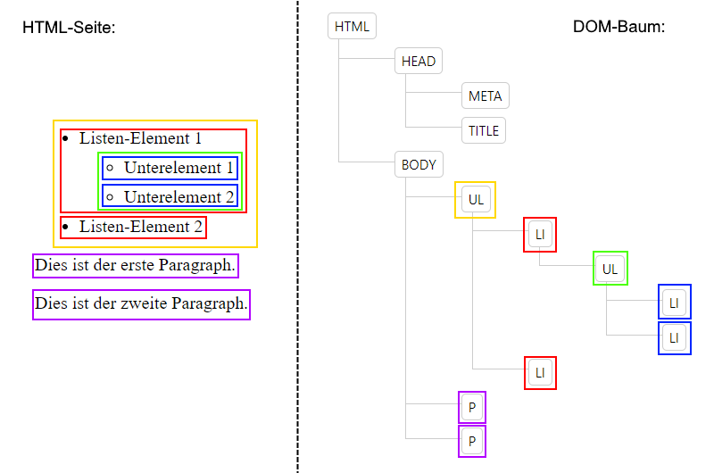
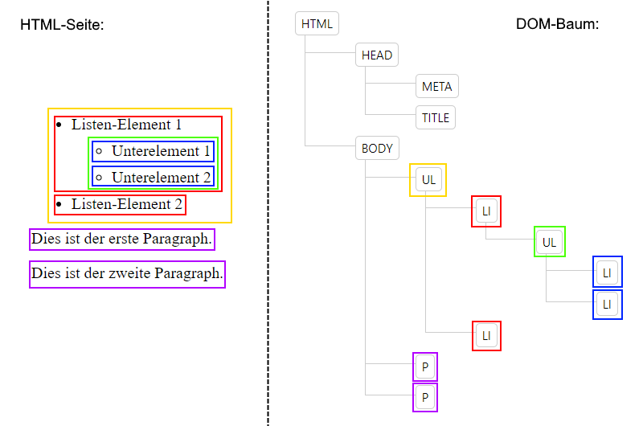
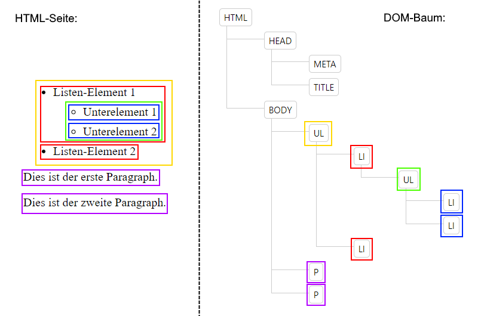

=======

>>>>>>> 91ed94bac351770c3bb9aeb8ec156d30cfde0085:htsta/chapter07_css/tasks/task46.html
=======

>>>>>>> 91ed94bac351770c3bb9aeb8ec156d30cfde0085:htsta/chapter07_css/tasks/task46.html
The DOM (Document Object Model) is the representation of an HTML page in a tree structure. Each node of the tree represents an element (e.g. heading, paragraph) of the HTML page. The connections of the nodes reflect the structure of the page.
The structure of a DOM is best illustrated by a small example:
=======

>>>>>>> 91ed94bac351770c3bb9aeb8ec156d30cfde0085:htsta/chapter07_css/tasks/task46.html
The following relationships apply between the HTML elements or nodes of the tree:
html element is the root node of any HTML DOM.html element is the root node of any HTML DOM.Based on the tree structure of an HTML page you can use further selectors in CSS. This is especially interesting for nested elements (like lists).
Answer the questions in
../solutions/task46.html.